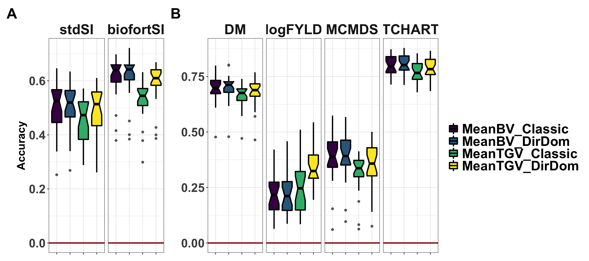
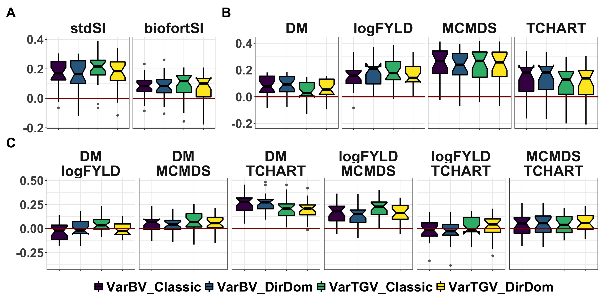
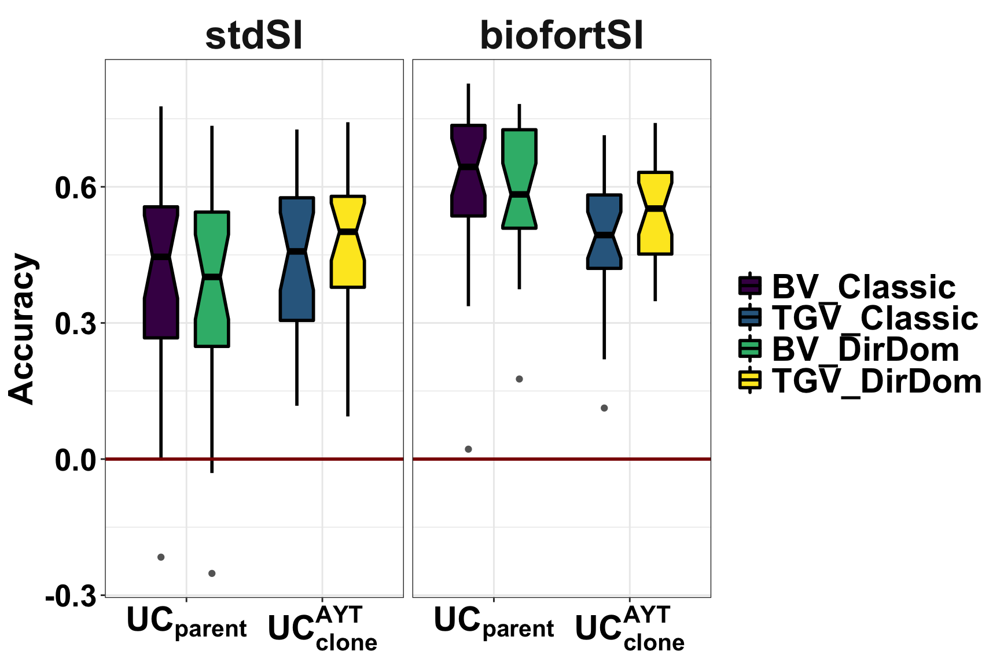
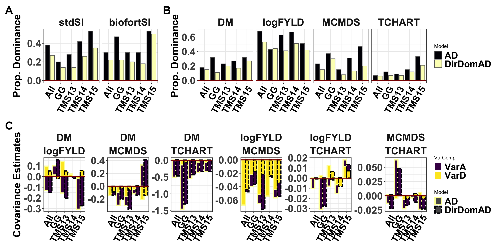
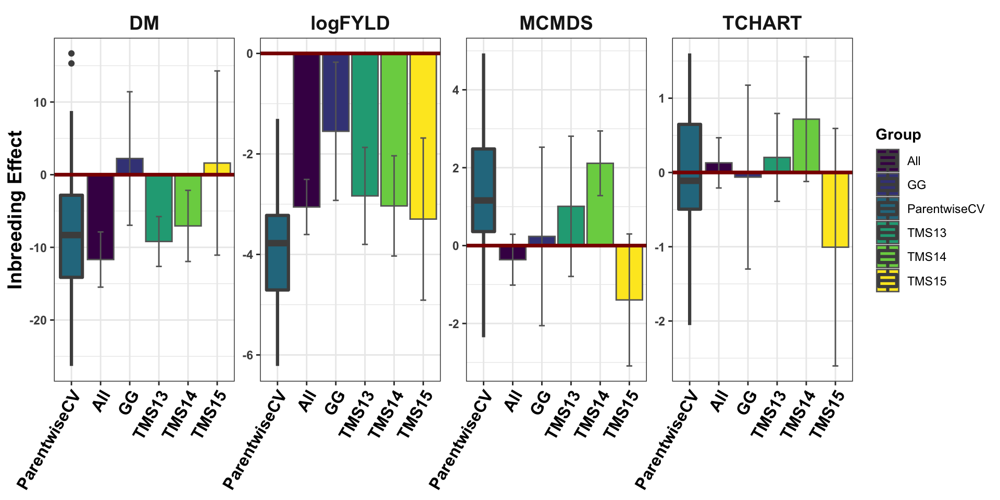
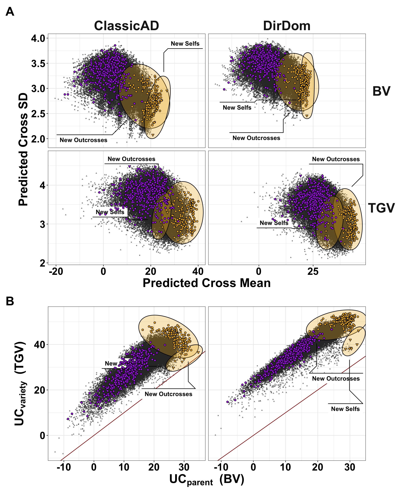
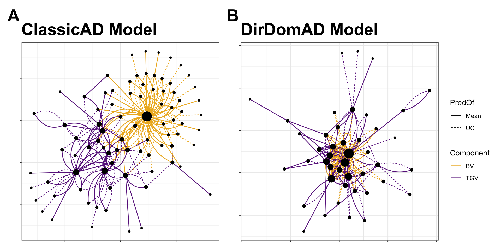

Last updated: 2021-01-03
Checks: 7 0
Knit directory: PredictOutbredCrossVar/
This reproducible R Markdown analysis was created with workflowr (version 1.6.2). The Checks tab describes the reproducibility checks that were applied when the results were created. The Past versions tab lists the development history.
Great! Since the R Markdown file has been committed to the Git repository, you know the exact version of the code that produced these results.
Great job! The global environment was empty. Objects defined in the global environment can affect the analysis in your R Markdown file in unknown ways. For reproduciblity it’s best to always run the code in an empty environment.
The command set.seed(20191123) was run prior to running the code in the R Markdown file. Setting a seed ensures that any results that rely on randomness, e.g. subsampling or permutations, are reproducible.
Great job! Recording the operating system, R version, and package versions is critical for reproducibility.
Nice! There were no cached chunks for this analysis, so you can be confident that you successfully produced the results during this run.
Great job! Using relative paths to the files within your workflowr project makes it easier to run your code on other machines.
Great! You are using Git for version control. Tracking code development and connecting the code version to the results is critical for reproducibility.
The results in this page were generated with repository version e7306d3. See the Past versions tab to see a history of the changes made to the R Markdown and HTML files.
Note that you need to be careful to ensure that all relevant files for the analysis have been committed to Git prior to generating the results (you can use wflow_publish or wflow_git_commit). workflowr only checks the R Markdown file, but you know if there are other scripts or data files that it depends on. Below is the status of the Git repository when the results were generated:
Ignored files:
Ignored: .DS_Store
Ignored: .Rhistory
Ignored: .Rproj.user/
Ignored: analysis/.DS_Store
Ignored: code/.DS_Store
Ignored: data/.DS_Store
Ignored: manuscript/.DS_Store
Ignored: output/.DS_Store
Ignored: output/crossPredictions/.DS_Store
Ignored: output/crossPredictions/.gitignore
Ignored: output/crossPredictions/Icon
Ignored: output/crossPredictions/July2020/
Ignored: output/crossPredictions/defunctDirectionalDomResults/
Ignored: output/crossPredictions/mt_Repeat1_Fold1_trainset_A_predVarAndCovarBVs.rds
Ignored: output/crossPredictions/mt_Repeat1_Fold2_trainset_A_predVarAndCovarBVs.rds
Ignored: output/crossPredictions/mt_Repeat1_Fold3_trainset_A_predVarAndCovarBVs.rds
Ignored: output/crossPredictions/mt_Repeat1_Fold4_trainset_A_predVarAndCovarBVs.rds
Ignored: output/crossPredictions/mt_Repeat1_Fold5_trainset_A_predVarAndCovarBVs.rds
Ignored: output/crossPredictions/mt_Repeat2_Fold1_trainset_A_predVarAndCovarBVs.rds
Ignored: output/crossPredictions/mt_Repeat2_Fold2_trainset_A_predVarAndCovarBVs.rds
Ignored: output/crossPredictions/mt_Repeat2_Fold3_trainset_A_predVarAndCovarBVs.rds
Ignored: output/crossPredictions/mt_Repeat2_Fold4_trainset_A_predVarAndCovarBVs.rds
Ignored: output/crossPredictions/mt_Repeat2_Fold5_trainset_A_predVarAndCovarBVs.rds
Ignored: output/crossPredictions/mt_Repeat3_Fold1_trainset_A_predVarAndCovarBVs.rds
Ignored: output/crossPredictions/mt_Repeat3_Fold2_trainset_A_predVarAndCovarBVs.rds
Ignored: output/crossPredictions/mt_Repeat3_Fold3_trainset_A_predVarAndCovarBVs.rds
Ignored: output/crossPredictions/mt_Repeat3_Fold4_trainset_A_predVarAndCovarBVs.rds
Ignored: output/crossPredictions/mt_Repeat3_Fold5_trainset_A_predVarAndCovarBVs.rds
Ignored: output/crossPredictions/mt_Repeat4_Fold1_trainset_A_predVarAndCovarBVs.rds
Ignored: output/crossPredictions/mt_Repeat4_Fold2_trainset_A_predVarAndCovarBVs.rds
Ignored: output/crossPredictions/mt_Repeat4_Fold3_trainset_A_predVarAndCovarBVs.rds
Ignored: output/crossPredictions/mt_Repeat4_Fold4_trainset_A_predVarAndCovarBVs.rds
Ignored: output/crossPredictions/mt_Repeat4_Fold5_trainset_A_predVarAndCovarBVs.rds
Ignored: output/crossPredictions/mt_Repeat5_Fold1_trainset_A_predVarAndCovarBVs.rds
Ignored: output/crossPredictions/mt_Repeat5_Fold2_trainset_A_predVarAndCovarBVs.rds
Ignored: output/crossPredictions/mt_Repeat5_Fold3_trainset_A_predVarAndCovarBVs.rds
Ignored: output/crossPredictions/mt_Repeat5_Fold4_trainset_A_predVarAndCovarBVs.rds
Ignored: output/crossPredictions/mt_Repeat5_Fold5_trainset_A_predVarAndCovarBVs.rds
Ignored: output/crossPredictions/otherRetiredEarlyResults/
Ignored: output/crossPredictions/predUntestedCrossBVs_ReDoSelfs_A_predVarAndCovarBVs.rds
Ignored: output/crossPredictions/predUntestedCrossTGVs_ReDoSelfs_AD_predVarsAndCovars.rds
Ignored: output/crossPredictions/predictedCrossVars_chunk1_2Dec2020.rds
Ignored: output/crossPredictions/predictedCrossVars_chunk2_2Dec2020.rds
Ignored: output/crossPredictions/predictedCrossVars_chunk3_2Dec2020.rds
Ignored: output/crossPredictions/predictedCrossVars_chunk4_2Dec2020.rds
Ignored: output/crossPredictions/predictedCrossVars_chunk5_2Dec2020.rds
Ignored: output/crossPredictions/predictedDirectionalDomCrossVarBVs_chunk1_15Dec2020.rds
Ignored: output/crossPredictions/predictedDirectionalDomCrossVarBVs_chunk1_2Dec2020.rds
Ignored: output/crossPredictions/predictedDirectionalDomCrossVarBVs_chunk2_15Dec2020.rds
Ignored: output/crossPredictions/predictedDirectionalDomCrossVarBVs_chunk2_2Dec2020.rds
Ignored: output/crossPredictions/predictedDirectionalDomCrossVarBVs_chunk3_15Dec2020.rds
Ignored: output/crossPredictions/predictedDirectionalDomCrossVarBVs_chunk3_2Dec2020.rds
Ignored: output/crossPredictions/predictedDirectionalDomCrossVarBVs_chunk4_15Dec2020.rds
Ignored: output/crossPredictions/predictedDirectionalDomCrossVarBVs_chunk4_2Dec2020.rds
Ignored: output/crossPredictions/predictedDirectionalDomCrossVarBVs_chunk5_2Dec2020.rds
Ignored: output/crossPredictions/predictedDirectionalDomCrossVarTGVs_chunk1_15Dec2020.rds
Ignored: output/crossPredictions/predictedDirectionalDomCrossVarTGVs_chunk1_2Dec2020.rds
Ignored: output/crossPredictions/predictedDirectionalDomCrossVarTGVs_chunk2_15Dec2020.rds
Ignored: output/crossPredictions/predictedDirectionalDomCrossVarTGVs_chunk2_2Dec2020.rds
Ignored: output/crossPredictions/predictedDirectionalDomCrossVarTGVs_chunk3_15Dec2020.rds
Ignored: output/crossPredictions/predictedDirectionalDomCrossVarTGVs_chunk3_2Dec2020.rds
Ignored: output/crossPredictions/predictedDirectionalDomCrossVarTGVs_chunk4_15Dec2020.rds
Ignored: output/crossPredictions/predictedDirectionalDomCrossVarTGVs_chunk4_2Dec2020.rds
Ignored: output/crossPredictions/predictedDirectionalDomCrossVarTGVs_chunk5_2Dec2020.rds
Ignored: output/crossPredictions/retired_ReDoSelfs/
Ignored: output/crossRealizations/.DS_Store
Ignored: output/mtMarkerEffects/Icon
Untracked files:
Untracked: Abstract_EdingburghCompGenomicsTalk_2020June02.gdoc
Untracked: Icon
Untracked: ScratchSlidesAndNotes.gslides
Untracked: analysis/ICQG6.Rmd
Untracked: analysis/Icon
Untracked: archive/
Untracked: code/Icon
Untracked: data/Icon
Untracked: manuscript/Figures.gslides
Untracked: manuscript/SupplementaryTable06.csv
Untracked: manuscript/SupplementaryTable07.csv
Untracked: manuscript/SupplementaryTable08.csv
Untracked: manuscript/SupplementaryTable09.csv
Untracked: manuscript/SupplementaryTable17.csv
Untracked: manuscript/SupplementaryTable18.csv
Untracked: output/Figures/
Untracked: output/Icon
Untracked: output/Tables/
Untracked: output/crossRealizations/Icon
Untracked: predCrossVar/
Untracked: rsyncs.R
Untracked: rsyncs2.R
Untracked: setupOnServer.R
Unstaged changes:
Modified: analysis/NGCleadersCall.Rmd
Modified: data/Madd_awc.rds
Modified: data/Mdom_awc.rds
Modified: data/blups_forawcdata.rds
Modified: data/dosages_awc.rds
Modified: data/genmap_awc_May2020.rds
Modified: data/haps_awc.rds
Modified: data/iita_blupsForCrossVal_72619.rds
Modified: data/parentwise_crossVal_folds.rds
Modified: data/ped_awc.rds
Modified: data/recombFreqMat_1minus2c_awcmap_May2020.rds
Modified: manuscript/SupplementaryTables.xlsx
Modified: output/accuraciesMeans.rds
Modified: output/accuraciesUC.rds
Modified: output/accuraciesVars.rds
Modified: output/crossPredictions/TableS7_predictedCrossVars.rds
Modified: output/crossPredictions/mt_Repeat1_Fold1_trainset_AD_predVarsAndCovars.rds
Deleted: output/crossPredictions/mt_Repeat1_Fold1_trainset_A_predVarsAndCovars.rds
Modified: output/crossPredictions/mt_Repeat1_Fold1_trainset_DirectionalDom_predVarAndCovarBVs.rds
Modified: output/crossPredictions/mt_Repeat1_Fold1_trainset_DirectionalDom_predVarsAndCovars.rds
Modified: output/crossPredictions/mt_Repeat1_Fold2_trainset_AD_predVarsAndCovars.rds
Deleted: output/crossPredictions/mt_Repeat1_Fold2_trainset_A_predVarsAndCovars.rds
Modified: output/crossPredictions/mt_Repeat1_Fold2_trainset_DirectionalDom_predVarAndCovarBVs.rds
Modified: output/crossPredictions/mt_Repeat1_Fold2_trainset_DirectionalDom_predVarsAndCovars.rds
Modified: output/crossPredictions/mt_Repeat1_Fold3_trainset_AD_predVarsAndCovars.rds
Deleted: output/crossPredictions/mt_Repeat1_Fold3_trainset_A_predVarsAndCovars.rds
Modified: output/crossPredictions/mt_Repeat1_Fold3_trainset_DirectionalDom_predVarAndCovarBVs.rds
Modified: output/crossPredictions/mt_Repeat1_Fold3_trainset_DirectionalDom_predVarsAndCovars.rds
Modified: output/crossPredictions/mt_Repeat1_Fold4_trainset_AD_predVarsAndCovars.rds
Deleted: output/crossPredictions/mt_Repeat1_Fold4_trainset_A_predVarsAndCovars.rds
Modified: output/crossPredictions/mt_Repeat1_Fold4_trainset_DirectionalDom_predVarAndCovarBVs.rds
Modified: output/crossPredictions/mt_Repeat1_Fold4_trainset_DirectionalDom_predVarsAndCovars.rds
Modified: output/crossPredictions/mt_Repeat1_Fold5_trainset_AD_predVarsAndCovars.rds
Deleted: output/crossPredictions/mt_Repeat1_Fold5_trainset_A_predVarsAndCovars.rds
Modified: output/crossPredictions/mt_Repeat1_Fold5_trainset_DirectionalDom_predVarAndCovarBVs.rds
Modified: output/crossPredictions/mt_Repeat1_Fold5_trainset_DirectionalDom_predVarsAndCovars.rds
Modified: output/crossPredictions/mt_Repeat2_Fold1_trainset_AD_predVarsAndCovars.rds
Deleted: output/crossPredictions/mt_Repeat2_Fold1_trainset_A_predVarsAndCovars.rds
Modified: output/crossPredictions/mt_Repeat2_Fold1_trainset_DirectionalDom_predVarAndCovarBVs.rds
Modified: output/crossPredictions/mt_Repeat2_Fold1_trainset_DirectionalDom_predVarsAndCovars.rds
Modified: output/crossPredictions/mt_Repeat2_Fold2_trainset_AD_predVarsAndCovars.rds
Deleted: output/crossPredictions/mt_Repeat2_Fold2_trainset_A_predVarsAndCovars.rds
Modified: output/crossPredictions/mt_Repeat2_Fold2_trainset_DirectionalDom_predVarAndCovarBVs.rds
Modified: output/crossPredictions/mt_Repeat2_Fold2_trainset_DirectionalDom_predVarsAndCovars.rds
Modified: output/crossPredictions/mt_Repeat2_Fold3_trainset_AD_predVarsAndCovars.rds
Deleted: output/crossPredictions/mt_Repeat2_Fold3_trainset_A_predVarsAndCovars.rds
Modified: output/crossPredictions/mt_Repeat2_Fold3_trainset_DirectionalDom_predVarAndCovarBVs.rds
Modified: output/crossPredictions/mt_Repeat2_Fold3_trainset_DirectionalDom_predVarsAndCovars.rds
Modified: output/crossPredictions/mt_Repeat2_Fold4_trainset_AD_predVarsAndCovars.rds
Deleted: output/crossPredictions/mt_Repeat2_Fold4_trainset_A_predVarsAndCovars.rds
Modified: output/crossPredictions/mt_Repeat2_Fold4_trainset_DirectionalDom_predVarAndCovarBVs.rds
Modified: output/crossPredictions/mt_Repeat2_Fold4_trainset_DirectionalDom_predVarsAndCovars.rds
Modified: output/crossPredictions/mt_Repeat2_Fold5_trainset_AD_predVarsAndCovars.rds
Deleted: output/crossPredictions/mt_Repeat2_Fold5_trainset_A_predVarsAndCovars.rds
Modified: output/crossPredictions/mt_Repeat2_Fold5_trainset_DirectionalDom_predVarAndCovarBVs.rds
Modified: output/crossPredictions/mt_Repeat2_Fold5_trainset_DirectionalDom_predVarsAndCovars.rds
Modified: output/crossPredictions/mt_Repeat3_Fold1_trainset_AD_predVarsAndCovars.rds
Deleted: output/crossPredictions/mt_Repeat3_Fold1_trainset_A_predVarsAndCovars.rds
Modified: output/crossPredictions/mt_Repeat3_Fold1_trainset_DirectionalDom_predVarAndCovarBVs.rds
Modified: output/crossPredictions/mt_Repeat3_Fold1_trainset_DirectionalDom_predVarsAndCovars.rds
Modified: output/crossPredictions/mt_Repeat3_Fold2_trainset_AD_predVarsAndCovars.rds
Deleted: output/crossPredictions/mt_Repeat3_Fold2_trainset_A_predVarsAndCovars.rds
Modified: output/crossPredictions/mt_Repeat3_Fold2_trainset_DirectionalDom_predVarAndCovarBVs.rds
Modified: output/crossPredictions/mt_Repeat3_Fold2_trainset_DirectionalDom_predVarsAndCovars.rds
Modified: output/crossPredictions/mt_Repeat3_Fold3_trainset_AD_predVarsAndCovars.rds
Deleted: output/crossPredictions/mt_Repeat3_Fold3_trainset_A_predVarsAndCovars.rds
Modified: output/crossPredictions/mt_Repeat3_Fold3_trainset_DirectionalDom_predVarAndCovarBVs.rds
Modified: output/crossPredictions/mt_Repeat3_Fold3_trainset_DirectionalDom_predVarsAndCovars.rds
Modified: output/crossPredictions/mt_Repeat3_Fold4_trainset_AD_predVarsAndCovars.rds
Deleted: output/crossPredictions/mt_Repeat3_Fold4_trainset_A_predVarsAndCovars.rds
Modified: output/crossPredictions/mt_Repeat3_Fold4_trainset_DirectionalDom_predVarAndCovarBVs.rds
Modified: output/crossPredictions/mt_Repeat3_Fold4_trainset_DirectionalDom_predVarsAndCovars.rds
Modified: output/crossPredictions/mt_Repeat3_Fold5_trainset_AD_predVarsAndCovars.rds
Deleted: output/crossPredictions/mt_Repeat3_Fold5_trainset_A_predVarsAndCovars.rds
Modified: output/crossPredictions/mt_Repeat3_Fold5_trainset_DirectionalDom_predVarAndCovarBVs.rds
Modified: output/crossPredictions/mt_Repeat3_Fold5_trainset_DirectionalDom_predVarsAndCovars.rds
Modified: output/crossPredictions/mt_Repeat4_Fold1_trainset_AD_predVarsAndCovars.rds
Deleted: output/crossPredictions/mt_Repeat4_Fold1_trainset_A_predVarsAndCovars.rds
Modified: output/crossPredictions/mt_Repeat4_Fold1_trainset_DirectionalDom_predVarAndCovarBVs.rds
Modified: output/crossPredictions/mt_Repeat4_Fold1_trainset_DirectionalDom_predVarsAndCovars.rds
Modified: output/crossPredictions/mt_Repeat4_Fold2_trainset_AD_predVarsAndCovars.rds
Deleted: output/crossPredictions/mt_Repeat4_Fold2_trainset_A_predVarsAndCovars.rds
Modified: output/crossPredictions/mt_Repeat4_Fold2_trainset_DirectionalDom_predVarAndCovarBVs.rds
Modified: output/crossPredictions/mt_Repeat4_Fold2_trainset_DirectionalDom_predVarsAndCovars.rds
Modified: output/crossPredictions/mt_Repeat4_Fold3_trainset_AD_predVarsAndCovars.rds
Deleted: output/crossPredictions/mt_Repeat4_Fold3_trainset_A_predVarsAndCovars.rds
Modified: output/crossPredictions/mt_Repeat4_Fold3_trainset_DirectionalDom_predVarAndCovarBVs.rds
Modified: output/crossPredictions/mt_Repeat4_Fold3_trainset_DirectionalDom_predVarsAndCovars.rds
Modified: output/crossPredictions/mt_Repeat4_Fold4_trainset_AD_predVarsAndCovars.rds
Deleted: output/crossPredictions/mt_Repeat4_Fold4_trainset_A_predVarsAndCovars.rds
Modified: output/crossPredictions/mt_Repeat4_Fold4_trainset_DirectionalDom_predVarAndCovarBVs.rds
Modified: output/crossPredictions/mt_Repeat4_Fold4_trainset_DirectionalDom_predVarsAndCovars.rds
Modified: output/crossPredictions/mt_Repeat4_Fold5_trainset_AD_predVarsAndCovars.rds
Deleted: output/crossPredictions/mt_Repeat4_Fold5_trainset_A_predVarsAndCovars.rds
Modified: output/crossPredictions/mt_Repeat4_Fold5_trainset_DirectionalDom_predVarAndCovarBVs.rds
Modified: output/crossPredictions/mt_Repeat4_Fold5_trainset_DirectionalDom_predVarsAndCovars.rds
Modified: output/crossPredictions/mt_Repeat5_Fold1_trainset_AD_predVarsAndCovars.rds
Deleted: output/crossPredictions/mt_Repeat5_Fold1_trainset_A_predVarsAndCovars.rds
Modified: output/crossPredictions/mt_Repeat5_Fold1_trainset_DirectionalDom_predVarAndCovarBVs.rds
Modified: output/crossPredictions/mt_Repeat5_Fold1_trainset_DirectionalDom_predVarsAndCovars.rds
Modified: output/crossPredictions/mt_Repeat5_Fold2_trainset_AD_predVarsAndCovars.rds
Deleted: output/crossPredictions/mt_Repeat5_Fold2_trainset_A_predVarsAndCovars.rds
Modified: output/crossPredictions/mt_Repeat5_Fold2_trainset_DirectionalDom_predVarAndCovarBVs.rds
Modified: output/crossPredictions/mt_Repeat5_Fold2_trainset_DirectionalDom_predVarsAndCovars.rds
Modified: output/crossPredictions/mt_Repeat5_Fold3_trainset_AD_predVarsAndCovars.rds
Deleted: output/crossPredictions/mt_Repeat5_Fold3_trainset_A_predVarsAndCovars.rds
Modified: output/crossPredictions/mt_Repeat5_Fold3_trainset_DirectionalDom_predVarAndCovarBVs.rds
Modified: output/crossPredictions/mt_Repeat5_Fold3_trainset_DirectionalDom_predVarsAndCovars.rds
Modified: output/crossPredictions/mt_Repeat5_Fold4_trainset_AD_predVarsAndCovars.rds
Deleted: output/crossPredictions/mt_Repeat5_Fold4_trainset_A_predVarsAndCovars.rds
Modified: output/crossPredictions/mt_Repeat5_Fold4_trainset_DirectionalDom_predVarAndCovarBVs.rds
Modified: output/crossPredictions/mt_Repeat5_Fold4_trainset_DirectionalDom_predVarsAndCovars.rds
Modified: output/crossPredictions/mt_Repeat5_Fold5_trainset_AD_predVarsAndCovars.rds
Deleted: output/crossPredictions/mt_Repeat5_Fold5_trainset_A_predVarsAndCovars.rds
Modified: output/crossPredictions/mt_Repeat5_Fold5_trainset_DirectionalDom_predVarAndCovarBVs.rds
Modified: output/crossPredictions/mt_Repeat5_Fold5_trainset_DirectionalDom_predVarsAndCovars.rds
Modified: output/crossPredictions/predUntestedCrossBVs_chunk1_A_predVarAndCovarBVs.rds
Modified: output/crossPredictions/predUntestedCrossBVs_chunk1_DirDom_predVarAndCovarBVs.rds
Modified: output/crossPredictions/predUntestedCrossBVs_chunk2_A_predVarAndCovarBVs.rds
Modified: output/crossPredictions/predUntestedCrossBVs_chunk2_DirDom_predVarAndCovarBVs.rds
Modified: output/crossPredictions/predUntestedCrossBVs_chunk3_A_predVarAndCovarBVs.rds
Modified: output/crossPredictions/predUntestedCrossBVs_chunk3_DirDom_predVarAndCovarBVs.rds
Modified: output/crossPredictions/predUntestedCrossBVs_chunk4_A_predVarAndCovarBVs.rds
Modified: output/crossPredictions/predUntestedCrossBVs_chunk4_DirDom_predVarAndCovarBVs.rds
Modified: output/crossPredictions/predUntestedCrossBVs_chunk5_A_predVarAndCovarBVs.rds
Deleted: output/crossPredictions/predUntestedCrossBVs_chunk5_DirDom_predVarAndCovarBVs.rds
Modified: output/crossPredictions/predUntestedCrossTGVs_chunk1_AD_predVarsAndCovars.rds
Modified: output/crossPredictions/predUntestedCrossTGVs_chunk1_DirDom_predVarsAndCovars.rds
Modified: output/crossPredictions/predUntestedCrossTGVs_chunk2_AD_predVarsAndCovars.rds
Modified: output/crossPredictions/predUntestedCrossTGVs_chunk2_DirDom_predVarsAndCovars.rds
Modified: output/crossPredictions/predUntestedCrossTGVs_chunk3_AD_predVarsAndCovars.rds
Modified: output/crossPredictions/predUntestedCrossTGVs_chunk3_DirDom_predVarsAndCovars.rds
Modified: output/crossPredictions/predUntestedCrossTGVs_chunk4_AD_predVarsAndCovars.rds
Modified: output/crossPredictions/predUntestedCrossTGVs_chunk4_DirDom_predVarsAndCovars.rds
Modified: output/crossPredictions/predUntestedCrossTGVs_chunk5_AD_predVarsAndCovars.rds
Deleted: output/crossPredictions/predUntestedCrossTGVs_chunk5_DirDom_predVarsAndCovars.rds
Deleted: output/crossPredictions/predUntestedCrosses_209parents_chunk1_AD_predVarsAndCovars.rds
Deleted: output/crossPredictions/predUntestedCrosses_209parents_chunk1_A_predVarsAndCovars.rds
Deleted: output/crossPredictions/predUntestedCrosses_209parents_chunk2_AD_predVarsAndCovars.rds
Deleted: output/crossPredictions/predUntestedCrosses_209parents_chunk2_A_predVarsAndCovars.rds
Deleted: output/crossPredictions/predUntestedCrosses_209parents_chunk3_AD_predVarsAndCovars.rds
Deleted: output/crossPredictions/predUntestedCrosses_209parents_chunk3_A_predVarsAndCovars.rds
Deleted: output/crossPredictions/predUntestedCrosses_209parents_chunk4_AD_predVarsAndCovars.rds
Deleted: output/crossPredictions/predUntestedCrosses_209parents_chunk4_A_predVarsAndCovars.rds
Deleted: output/crossPredictions/predUntestedCrosses_209parents_chunk5_AD_predVarsAndCovars.rds
Deleted: output/crossPredictions/predUntestedCrosses_209parents_chunk5_A_predVarsAndCovars.rds
Deleted: output/crossPredictions/predUntestedCrosses_top100stdSI_chunk1_AD_predVarsAndCovars.rds
Deleted: output/crossPredictions/predUntestedCrosses_top100stdSI_chunk1_A_predVarsAndCovars.rds
Deleted: output/crossPredictions/predUntestedCrosses_top100stdSI_chunk2_AD_predVarsAndCovars.rds
Deleted: output/crossPredictions/predUntestedCrosses_top100stdSI_chunk2_A_predVarsAndCovars.rds
Deleted: output/crossPredictions/predUntestedCrosses_top100stdSI_chunk3_AD_predVarsAndCovars.rds
Deleted: output/crossPredictions/predUntestedCrosses_top100stdSI_chunk3_A_predVarsAndCovars.rds
Deleted: output/crossPredictions/predUntestedCrosses_top100stdSI_chunk4_AD_predVarsAndCovars.rds
Deleted: output/crossPredictions/predUntestedCrosses_top100stdSI_chunk4_A_predVarsAndCovars.rds
Deleted: output/crossPredictions/predUntestedCrosses_top100stdSI_chunk5_AD_predVarsAndCovars.rds
Deleted: output/crossPredictions/predUntestedCrosses_top100stdSI_chunk5_A_predVarsAndCovars.rds
Modified: output/crossPredictions/predictedCrossMeans.rds
Modified: output/crossPredictions/predictedCrossMeans_DirectionalDom_tidy_withSelIndices.rds
Deleted: output/crossPredictions/predictedCrossMeans_GCA_SCA.rds
Modified: output/crossPredictions/predictedCrossMeans_tidy_withSelIndices.rds
Modified: output/crossPredictions/predictedCrossVars_DirectionalDom_tidy_withSelIndices.rds
Deleted: output/crossPredictions/predictedCrossVars_GCA_SCA.rds
Deleted: output/crossPredictions/predictedCrossVars_chunk1.rds
Deleted: output/crossPredictions/predictedCrossVars_chunk2.rds
Deleted: output/crossPredictions/predictedCrossVars_chunk3.rds
Deleted: output/crossPredictions/predictedCrossVars_chunk4.rds
Deleted: output/crossPredictions/predictedCrossVars_chunk5.rds
Modified: output/crossPredictions/predictedCrossVars_tidy_withSelIndices.rds
Modified: output/crossPredictions/predictedDirectionalDomCrossMeans.rds
Deleted: output/crossPredictions/predictedDirectionalDomCrossVarBVs_chunk1.rds
Deleted: output/crossPredictions/predictedDirectionalDomCrossVarBVs_chunk2.rds
Deleted: output/crossPredictions/predictedDirectionalDomCrossVarBVs_chunk3.rds
Deleted: output/crossPredictions/predictedDirectionalDomCrossVarBVs_chunk4.rds
Deleted: output/crossPredictions/predictedDirectionalDomCrossVarBVs_chunk5.rds
Deleted: output/crossPredictions/predictedDirectionalDomCrossVars_chunk1.rds
Deleted: output/crossPredictions/predictedDirectionalDomCrossVars_chunk2.rds
Deleted: output/crossPredictions/predictedDirectionalDomCrossVars_chunk3.rds
Deleted: output/crossPredictions/predictedDirectionalDomCrossVars_chunk4.rds
Deleted: output/crossPredictions/predictedDirectionalDomCrossVars_chunk5.rds
Modified: output/crossPredictions/predictedUntestedCrossMeansBV.rds
Modified: output/crossPredictions/predictedUntestedCrossMeansDirDom.rds
Modified: output/crossPredictions/predictedUntestedCrossMeansTGV.rds
Modified: output/crossPredictions/predictedUntestedCrossMeans_SelIndices.rds
Modified: output/crossPredictions/predictedUntestedCrossMeans_tidy_traits.rds
Modified: output/crossPredictions/predictedUntestedCrossVars_SelIndices.rds
Modified: output/crossPredictions/predictedUntestedCrossVars_tidy_traits.rds
Modified: output/crossRealizations/realizedCrossMeans.rds
Modified: output/crossRealizations/realizedCrossMeans_BLUPs.rds
Modified: output/crossRealizations/realizedCrossMetrics.rds
Modified: output/crossRealizations/realizedCrossVars.rds
Modified: output/crossRealizations/realizedCrossVars_BLUPs.rds
Modified: output/crossRealizations/realized_cross_means_and_covs_traits.rds
Modified: output/crossRealizations/realized_cross_means_and_vars_selindices.rds
Modified: output/gblups_DirectionalDom_parentwise_crossVal_folds.rds
Modified: output/gblups_geneticgroups.rds
Modified: output/gblups_parentwise_crossVal_folds.rds
Modified: output/gebvs_ModelA_GroupAll_stdSI.rds
Modified: output/mtMarkerEffects/mt_All_A.rds
Modified: output/mtMarkerEffects/mt_All_AD.rds
Modified: output/mtMarkerEffects/mt_All_DirectionalDom.rds
Modified: output/mtMarkerEffects/mt_GG_A.rds
Modified: output/mtMarkerEffects/mt_GG_AD.rds
Modified: output/mtMarkerEffects/mt_GG_DirectionalDom.rds
Modified: output/mtMarkerEffects/mt_Repeat1_Fold1_testset_A.rds
Modified: output/mtMarkerEffects/mt_Repeat1_Fold1_testset_AD.rds
Modified: output/mtMarkerEffects/mt_Repeat1_Fold1_testset_DirectionalDom.rds
Modified: output/mtMarkerEffects/mt_Repeat1_Fold1_trainset_A.rds
Modified: output/mtMarkerEffects/mt_Repeat1_Fold1_trainset_AD.rds
Modified: output/mtMarkerEffects/mt_Repeat1_Fold1_trainset_DirectionalDom.rds
Modified: output/mtMarkerEffects/mt_Repeat1_Fold2_testset_A.rds
Modified: output/mtMarkerEffects/mt_Repeat1_Fold2_testset_AD.rds
Modified: output/mtMarkerEffects/mt_Repeat1_Fold2_testset_DirectionalDom.rds
Modified: output/mtMarkerEffects/mt_Repeat1_Fold2_trainset_A.rds
Modified: output/mtMarkerEffects/mt_Repeat1_Fold2_trainset_AD.rds
Modified: output/mtMarkerEffects/mt_Repeat1_Fold2_trainset_DirectionalDom.rds
Modified: output/mtMarkerEffects/mt_Repeat1_Fold3_testset_A.rds
Modified: output/mtMarkerEffects/mt_Repeat1_Fold3_testset_AD.rds
Modified: output/mtMarkerEffects/mt_Repeat1_Fold3_testset_DirectionalDom.rds
Modified: output/mtMarkerEffects/mt_Repeat1_Fold3_trainset_A.rds
Modified: output/mtMarkerEffects/mt_Repeat1_Fold3_trainset_AD.rds
Modified: output/mtMarkerEffects/mt_Repeat1_Fold3_trainset_DirectionalDom.rds
Modified: output/mtMarkerEffects/mt_Repeat1_Fold4_testset_A.rds
Modified: output/mtMarkerEffects/mt_Repeat1_Fold4_testset_AD.rds
Modified: output/mtMarkerEffects/mt_Repeat1_Fold4_testset_DirectionalDom.rds
Modified: output/mtMarkerEffects/mt_Repeat1_Fold4_trainset_A.rds
Modified: output/mtMarkerEffects/mt_Repeat1_Fold4_trainset_AD.rds
Modified: output/mtMarkerEffects/mt_Repeat1_Fold4_trainset_DirectionalDom.rds
Modified: output/mtMarkerEffects/mt_Repeat1_Fold5_testset_A.rds
Modified: output/mtMarkerEffects/mt_Repeat1_Fold5_testset_AD.rds
Modified: output/mtMarkerEffects/mt_Repeat1_Fold5_testset_DirectionalDom.rds
Modified: output/mtMarkerEffects/mt_Repeat1_Fold5_trainset_A.rds
Modified: output/mtMarkerEffects/mt_Repeat1_Fold5_trainset_AD.rds
Modified: output/mtMarkerEffects/mt_Repeat1_Fold5_trainset_DirectionalDom.rds
Modified: output/mtMarkerEffects/mt_Repeat2_Fold1_testset_A.rds
Modified: output/mtMarkerEffects/mt_Repeat2_Fold1_testset_AD.rds
Modified: output/mtMarkerEffects/mt_Repeat2_Fold1_testset_DirectionalDom.rds
Modified: output/mtMarkerEffects/mt_Repeat2_Fold1_trainset_A.rds
Modified: output/mtMarkerEffects/mt_Repeat2_Fold1_trainset_AD.rds
Modified: output/mtMarkerEffects/mt_Repeat2_Fold1_trainset_DirectionalDom.rds
Modified: output/mtMarkerEffects/mt_Repeat2_Fold2_testset_A.rds
Modified: output/mtMarkerEffects/mt_Repeat2_Fold2_testset_AD.rds
Modified: output/mtMarkerEffects/mt_Repeat2_Fold2_testset_DirectionalDom.rds
Modified: output/mtMarkerEffects/mt_Repeat2_Fold2_trainset_A.rds
Modified: output/mtMarkerEffects/mt_Repeat2_Fold2_trainset_AD.rds
Modified: output/mtMarkerEffects/mt_Repeat2_Fold2_trainset_DirectionalDom.rds
Modified: output/mtMarkerEffects/mt_Repeat2_Fold3_testset_A.rds
Modified: output/mtMarkerEffects/mt_Repeat2_Fold3_testset_AD.rds
Modified: output/mtMarkerEffects/mt_Repeat2_Fold3_testset_DirectionalDom.rds
Modified: output/mtMarkerEffects/mt_Repeat2_Fold3_trainset_A.rds
Modified: output/mtMarkerEffects/mt_Repeat2_Fold3_trainset_AD.rds
Modified: output/mtMarkerEffects/mt_Repeat2_Fold3_trainset_DirectionalDom.rds
Modified: output/mtMarkerEffects/mt_Repeat2_Fold4_testset_A.rds
Modified: output/mtMarkerEffects/mt_Repeat2_Fold4_testset_AD.rds
Modified: output/mtMarkerEffects/mt_Repeat2_Fold4_testset_DirectionalDom.rds
Modified: output/mtMarkerEffects/mt_Repeat2_Fold4_trainset_A.rds
Modified: output/mtMarkerEffects/mt_Repeat2_Fold4_trainset_AD.rds
Modified: output/mtMarkerEffects/mt_Repeat2_Fold4_trainset_DirectionalDom.rds
Modified: output/mtMarkerEffects/mt_Repeat2_Fold5_testset_A.rds
Modified: output/mtMarkerEffects/mt_Repeat2_Fold5_testset_AD.rds
Modified: output/mtMarkerEffects/mt_Repeat2_Fold5_testset_DirectionalDom.rds
Modified: output/mtMarkerEffects/mt_Repeat2_Fold5_trainset_A.rds
Modified: output/mtMarkerEffects/mt_Repeat2_Fold5_trainset_AD.rds
Modified: output/mtMarkerEffects/mt_Repeat2_Fold5_trainset_DirectionalDom.rds
Modified: output/mtMarkerEffects/mt_Repeat3_Fold1_testset_A.rds
Modified: output/mtMarkerEffects/mt_Repeat3_Fold1_testset_AD.rds
Modified: output/mtMarkerEffects/mt_Repeat3_Fold1_testset_DirectionalDom.rds
Modified: output/mtMarkerEffects/mt_Repeat3_Fold1_trainset_A.rds
Modified: output/mtMarkerEffects/mt_Repeat3_Fold1_trainset_AD.rds
Modified: output/mtMarkerEffects/mt_Repeat3_Fold1_trainset_DirectionalDom.rds
Modified: output/mtMarkerEffects/mt_Repeat3_Fold2_testset_A.rds
Modified: output/mtMarkerEffects/mt_Repeat3_Fold2_testset_AD.rds
Modified: output/mtMarkerEffects/mt_Repeat3_Fold2_testset_DirectionalDom.rds
Modified: output/mtMarkerEffects/mt_Repeat3_Fold2_trainset_A.rds
Modified: output/mtMarkerEffects/mt_Repeat3_Fold2_trainset_AD.rds
Modified: output/mtMarkerEffects/mt_Repeat3_Fold2_trainset_DirectionalDom.rds
Modified: output/mtMarkerEffects/mt_Repeat3_Fold3_testset_A.rds
Modified: output/mtMarkerEffects/mt_Repeat3_Fold3_testset_AD.rds
Modified: output/mtMarkerEffects/mt_Repeat3_Fold3_testset_DirectionalDom.rds
Modified: output/mtMarkerEffects/mt_Repeat3_Fold3_trainset_A.rds
Modified: output/mtMarkerEffects/mt_Repeat3_Fold3_trainset_AD.rds
Modified: output/mtMarkerEffects/mt_Repeat3_Fold3_trainset_DirectionalDom.rds
Modified: output/mtMarkerEffects/mt_Repeat3_Fold4_testset_A.rds
Modified: output/mtMarkerEffects/mt_Repeat3_Fold4_testset_AD.rds
Modified: output/mtMarkerEffects/mt_Repeat3_Fold4_testset_DirectionalDom.rds
Modified: output/mtMarkerEffects/mt_Repeat3_Fold4_trainset_A.rds
Modified: output/mtMarkerEffects/mt_Repeat3_Fold4_trainset_AD.rds
Modified: output/mtMarkerEffects/mt_Repeat3_Fold4_trainset_DirectionalDom.rds
Modified: output/mtMarkerEffects/mt_Repeat3_Fold5_testset_A.rds
Modified: output/mtMarkerEffects/mt_Repeat3_Fold5_testset_AD.rds
Modified: output/mtMarkerEffects/mt_Repeat3_Fold5_testset_DirectionalDom.rds
Modified: output/mtMarkerEffects/mt_Repeat3_Fold5_trainset_A.rds
Modified: output/mtMarkerEffects/mt_Repeat3_Fold5_trainset_AD.rds
Modified: output/mtMarkerEffects/mt_Repeat3_Fold5_trainset_DirectionalDom.rds
Modified: output/mtMarkerEffects/mt_Repeat4_Fold1_testset_A.rds
Modified: output/mtMarkerEffects/mt_Repeat4_Fold1_testset_AD.rds
Modified: output/mtMarkerEffects/mt_Repeat4_Fold1_testset_DirectionalDom.rds
Modified: output/mtMarkerEffects/mt_Repeat4_Fold1_trainset_A.rds
Modified: output/mtMarkerEffects/mt_Repeat4_Fold1_trainset_AD.rds
Modified: output/mtMarkerEffects/mt_Repeat4_Fold1_trainset_DirectionalDom.rds
Modified: output/mtMarkerEffects/mt_Repeat4_Fold2_testset_A.rds
Modified: output/mtMarkerEffects/mt_Repeat4_Fold2_testset_AD.rds
Modified: output/mtMarkerEffects/mt_Repeat4_Fold2_testset_DirectionalDom.rds
Modified: output/mtMarkerEffects/mt_Repeat4_Fold2_trainset_A.rds
Modified: output/mtMarkerEffects/mt_Repeat4_Fold2_trainset_AD.rds
Modified: output/mtMarkerEffects/mt_Repeat4_Fold2_trainset_DirectionalDom.rds
Modified: output/mtMarkerEffects/mt_Repeat4_Fold3_testset_A.rds
Modified: output/mtMarkerEffects/mt_Repeat4_Fold3_testset_AD.rds
Modified: output/mtMarkerEffects/mt_Repeat4_Fold3_testset_DirectionalDom.rds
Modified: output/mtMarkerEffects/mt_Repeat4_Fold3_trainset_A.rds
Modified: output/mtMarkerEffects/mt_Repeat4_Fold3_trainset_AD.rds
Modified: output/mtMarkerEffects/mt_Repeat4_Fold3_trainset_DirectionalDom.rds
Modified: output/mtMarkerEffects/mt_Repeat4_Fold4_testset_A.rds
Modified: output/mtMarkerEffects/mt_Repeat4_Fold4_testset_AD.rds
Modified: output/mtMarkerEffects/mt_Repeat4_Fold4_testset_DirectionalDom.rds
Modified: output/mtMarkerEffects/mt_Repeat4_Fold4_trainset_A.rds
Modified: output/mtMarkerEffects/mt_Repeat4_Fold4_trainset_AD.rds
Modified: output/mtMarkerEffects/mt_Repeat4_Fold4_trainset_DirectionalDom.rds
Modified: output/mtMarkerEffects/mt_Repeat4_Fold5_testset_A.rds
Modified: output/mtMarkerEffects/mt_Repeat4_Fold5_testset_AD.rds
Modified: output/mtMarkerEffects/mt_Repeat4_Fold5_testset_DirectionalDom.rds
Modified: output/mtMarkerEffects/mt_Repeat4_Fold5_trainset_A.rds
Modified: output/mtMarkerEffects/mt_Repeat4_Fold5_trainset_AD.rds
Modified: output/mtMarkerEffects/mt_Repeat4_Fold5_trainset_DirectionalDom.rds
Modified: output/mtMarkerEffects/mt_Repeat5_Fold1_testset_A.rds
Modified: output/mtMarkerEffects/mt_Repeat5_Fold1_testset_AD.rds
Modified: output/mtMarkerEffects/mt_Repeat5_Fold1_testset_DirectionalDom.rds
Modified: output/mtMarkerEffects/mt_Repeat5_Fold1_trainset_A.rds
Modified: output/mtMarkerEffects/mt_Repeat5_Fold1_trainset_AD.rds
Modified: output/mtMarkerEffects/mt_Repeat5_Fold1_trainset_DirectionalDom.rds
Modified: output/mtMarkerEffects/mt_Repeat5_Fold2_testset_A.rds
Modified: output/mtMarkerEffects/mt_Repeat5_Fold2_testset_AD.rds
Modified: output/mtMarkerEffects/mt_Repeat5_Fold2_testset_DirectionalDom.rds
Modified: output/mtMarkerEffects/mt_Repeat5_Fold2_trainset_A.rds
Modified: output/mtMarkerEffects/mt_Repeat5_Fold2_trainset_AD.rds
Modified: output/mtMarkerEffects/mt_Repeat5_Fold2_trainset_DirectionalDom.rds
Modified: output/mtMarkerEffects/mt_Repeat5_Fold3_testset_A.rds
Modified: output/mtMarkerEffects/mt_Repeat5_Fold3_testset_AD.rds
Modified: output/mtMarkerEffects/mt_Repeat5_Fold3_testset_DirectionalDom.rds
Modified: output/mtMarkerEffects/mt_Repeat5_Fold3_trainset_A.rds
Modified: output/mtMarkerEffects/mt_Repeat5_Fold3_trainset_AD.rds
Modified: output/mtMarkerEffects/mt_Repeat5_Fold3_trainset_DirectionalDom.rds
Modified: output/mtMarkerEffects/mt_Repeat5_Fold4_testset_A.rds
Modified: output/mtMarkerEffects/mt_Repeat5_Fold4_testset_AD.rds
Modified: output/mtMarkerEffects/mt_Repeat5_Fold4_testset_DirectionalDom.rds
Modified: output/mtMarkerEffects/mt_Repeat5_Fold4_trainset_A.rds
Modified: output/mtMarkerEffects/mt_Repeat5_Fold4_trainset_AD.rds
Modified: output/mtMarkerEffects/mt_Repeat5_Fold4_trainset_DirectionalDom.rds
Modified: output/mtMarkerEffects/mt_Repeat5_Fold5_testset_A.rds
Modified: output/mtMarkerEffects/mt_Repeat5_Fold5_testset_AD.rds
Modified: output/mtMarkerEffects/mt_Repeat5_Fold5_testset_DirectionalDom.rds
Modified: output/mtMarkerEffects/mt_Repeat5_Fold5_trainset_A.rds
Modified: output/mtMarkerEffects/mt_Repeat5_Fold5_trainset_AD.rds
Modified: output/mtMarkerEffects/mt_Repeat5_Fold5_trainset_DirectionalDom.rds
Modified: output/mtMarkerEffects/mt_TMS13_A.rds
Modified: output/mtMarkerEffects/mt_TMS13_AD.rds
Modified: output/mtMarkerEffects/mt_TMS13_DirectionalDom.rds
Modified: output/mtMarkerEffects/mt_TMS14_A.rds
Modified: output/mtMarkerEffects/mt_TMS14_AD.rds
Modified: output/mtMarkerEffects/mt_TMS14_DirectionalDom.rds
Modified: output/mtMarkerEffects/mt_TMS15_A.rds
Modified: output/mtMarkerEffects/mt_TMS15_AD.rds
Modified: output/mtMarkerEffects/mt_TMS15_DirectionalDom.rds
Modified: output/obsVSpredMeans.rds
Modified: output/obsVSpredUC.rds
Modified: output/obsVSpredVars.rds
Modified: output/pmv_DirectionalDom_varcomps_geneticgroups.rds
Modified: output/pmv_varcomps_geneticgroups.rds
Modified: output/pmv_varcomps_geneticgroups_tidy_includingSIvars.rds
Modified: workflowr_log.R
Note that any generated files, e.g. HTML, png, CSS, etc., are not included in this status report because it is ok for generated content to have uncommitted changes.
These are the previous versions of the repository in which changes were made to the R Markdown (analysis/Figures.Rmd) and HTML (docs/Figures.html) files. If you’ve configured a remote Git repository (see ?wflow_git_remote), click on the hyperlinks in the table below to view the files as they were in that past version.
| File | Version | Author | Date | Message |
|---|---|---|---|---|
| html | 22e6c87 | wolfemd | 2021-01-03 | Build site. |
| html | 85d0441 | wolfemd | 2021-01-02 | Build site. |
| Rmd | 48c1fea | wolfemd | 2021-01-02 | Compile submission version main figures. |
| html | f5cd33f | wolfemd | 2021-01-02 | Build site. |
| Rmd | b83b94e | wolfemd | 2021-01-02 | Compile submission version main figures. |
| html | 0b39367 | wolfemd | 2021-01-02 | Build site. |
| Rmd | 876dcd2 | wolfemd | 2021-01-02 | Compile submission version main figures. |
| html | fb29cd8 | wolfemd | 2021-01-02 | Build site. |
| Rmd | fd91cd9 | wolfemd | 2021-01-02 | Compile submission version main figures. |
| Rmd | 2e13628 | wolfemd | 2020-11-25 | Misc minor changes |
| html | 34c84f3 | wolfemd | 2020-10-27 | Build site. |
| Rmd | 57325b7 | wolfemd | 2020-10-27 | Figures and results for second COMPLETE draft. Publish final changes |
| Rmd | b4edd2c | wolfemd | 2020-10-27 | Start workflowr project. |
| Rmd | c08e88b | wolfemd | 2020-10-27 | Split figure 6 into 6+7 and upgraded. Ready to share with coauthors. |
| html | 3dbb1e8 | wolfemd | 2020-10-08 | Site built for first COMPLETE draft, shared with co-authors. |
| html | 2e6904e | wolfemd | 2020-10-08 | Build site. |
| Rmd | 17b24e6 | wolfemd | 2020-10-08 | First COMPLETE draft. Publish final changes before sharing with |
| html | 9714c34 | wolfemd | 2020-09-05 | Build site. |
| Rmd | c2fd60b | wolfemd | 2020-09-05 | Supress warnings and messages. Add (some) Figure legends. |
| html | 08c6aa7 | wolfemd | 2020-09-05 | Build site. |
| Rmd | 3e88e82 | wolfemd | 2020-09-05 | Supress warnings and messages. Add (some) Figure legends. |
| html | c4160a6 | wolfemd | 2020-08-31 | Build site. |
| Rmd | 46ffd24 | wolfemd | 2020-08-31 | Change code folding to default to hidden. |
| html | b06eee7 | wolfemd | 2020-08-31 | Build site. |
| Rmd | 849d7c1 | wolfemd | 2020-08-31 | Track manuscript draft, figures and sup. tables. All results drafted with references to sup. figures and tables in order committed here. |
| Rmd | 30cb15e | wolfemd | 2020-08-27 | Main text figures and Sup. Tables as of first rough draft. About to revise and assemble manuscript properly, but don’t expect these to change much. |
library(tidyverse); library(magrittr); library(patchwork)
# Table S10: Accuracies predicting the mean
accMeans<-readxl::read_xlsx(here::here("manuscript","SupplementaryTables.xlsx"),sheet = "TableS10")
forplot<-accMeans %>%
filter(ValidationData=="GBLUPs") %>%
mutate(Model=ifelse(Model %in% c("A","AD"),"Classic","DirDom"),
Pred=paste0(predOf,"_",Model),
Pred=factor(Pred,levels=c("MeanBV_Classic","MeanBV_DirDom","MeanTGV_Classic","MeanTGV_DirDom")),
Trait=factor(Trait,levels=c("stdSI","biofortSI","DM","logFYLD","MCMDS","TCHART")),
predOf=factor(predOf,levels=c("MeanBV","MeanTGV")),
Model=factor(Model,levels=c("Classic","DirDom")),
RepFold=paste0(Repeat,"_",Fold,"_",Trait))
p1<-forplot %>%
filter(grepl("SI",Trait)) %>%
# ggplot(.,aes(x=Pred,y=Accuracy,fill=Pred,linetype=VarComp)) +
ggplot(.,aes(x=Pred,y=Accuracy,fill=Pred)) +
# geom_boxplot(position = position_dodge2(padding=0.35), size=1.05,color='grey40') +
geom_boxplot(position = position_dodge2(padding=0.35), size=1,color='black',outlier.color = 'grey40', notch = TRUE) +
theme_bw() +
scale_fill_viridis_d() +
scale_color_viridis_d() +
geom_hline(yintercept = 0, color='darkred', size=1) +
theme(axis.text.x = element_blank(),
axis.title.x = element_blank(),
axis.text.y = element_text(face='bold'),
axis.title.y = element_text(face='bold', size = 18),
strip.background.x = element_blank(),
strip.text.x = element_text(face='bold'),
legend.position = 'none') +
facet_grid(.~Trait)
p2<-forplot %>%
filter(!grepl("SI",Trait)) %>%
ggplot(.,aes(x=Pred,y=Accuracy,fill=Pred)) +
# geom_boxplot(position = position_dodge2(padding=0.35), size=1.05,color='grey40') +
geom_boxplot(position = position_dodge2(padding=0.35), size=1,color='black',outlier.color = 'grey40', notch = TRUE) +
theme_bw() +
scale_fill_viridis_d() +
scale_color_viridis_d() +
geom_hline(yintercept = 0, color='darkred', size=1) +
theme(axis.text.x = element_blank(),
axis.title.x = element_blank(),
axis.text.y = element_text(face='bold'),
axis.title.y = element_blank(),
strip.background.x = element_blank(),
strip.text.x = element_text(face='bold'),
legend.title = element_blank(),
legend.text = element_text(face='bold',size=22)) +
facet_grid(.~Trait)p1 + p2 + plot_layout(widths = c(1, 2)) +
plot_annotation(tag_levels = 'A') &
theme(plot.title = element_text(size = 16, face='bold'),
plot.tag = element_text(size = 24, face='bold'),
strip.text.x = element_text(size = 23, face='bold'),
axis.text.y = element_text(size = 20, face = 'bold'))
Figure 1. Accuracy predicting the family mean of previously untested crosses. Fivefold parent-wise cross-validation estimates of the accuracy predicting the cross means on selection indices (A) and for component traits (B), is summarized in boxplots. Accuracy (y-axis) was measured as the correlation between the predicted and the observed mean GEBV or GETGV. For each trait, accuracies for four predictions: two prediction types (family mean BV vs. TGV) times two prediction models (Classic vs. DirDom).
## Table S11: Accuracies predicting the variances
library(tidyverse); library(magrittr); library(patchwork)
accVars<-readxl::read_xlsx(here::here("manuscript","SupplementaryTables.xlsx"),sheet = "TableS11")
forplot<-accVars %>%
filter(VarMethod=="PMV",ValidationData=="GBLUPs") %>%
mutate(Model=ifelse(Model %in% c("A","AD"),"Classic","DirDom"),
Pred=paste0(predOf,"_",Model),
Pred=factor(Pred,levels=c("VarBV_Classic","VarBV_DirDom","VarTGV_Classic","VarTGV_DirDom")),
Trait1=factor(Trait1,levels=c("stdSI","biofortSI","DM","logFYLD","MCMDS","TCHART")),
Trait2=factor(Trait2,levels=c("stdSI","biofortSI","DM","logFYLD","MCMDS","TCHART")),
Component=paste0(Trait1,"_",Trait2),
predOf=factor(predOf,levels=c("VarBV","VarTGV")),
Model=factor(Model,levels=c("A","AD","DirDom")),
RepFold=paste0(Repeat,"_",Fold,"_",Component))
p1<-forplot %>%
filter(Trait1==Trait2,grepl("SI",Trait1)) %>%
ggplot(.,aes(x=Pred,y=AccuracyWtCor,fill=Pred)) +
geom_boxplot(position = position_dodge2(padding=0.35), size=1,color='black',outlier.color = 'grey40', notch = TRUE) +
theme_bw() +
scale_fill_viridis_d() +
scale_color_viridis_d() +
geom_hline(yintercept = 0, color='darkred', size=1) +
theme(axis.text.x = element_blank(),
axis.title.x = element_blank(),
axis.text.y = element_text(face='bold'),
axis.title.y = element_blank(),
title = element_text(),
strip.background.x = element_blank(),
legend.title = element_blank(),
legend.text = element_text(face='bold',size=20),
strip.text.x = element_text(face='bold')) +
facet_grid(.~Trait1)
p2<-forplot %>%
filter(Trait1==Trait2,!grepl("SI",Trait1)) %>%
ggplot(.,aes(x=Pred,y=AccuracyWtCor,fill=Pred)) +
geom_boxplot(position = position_dodge2(padding=0.35), size=1,color='black',outlier.color = 'grey40', notch = TRUE) +
theme_bw() +
scale_fill_viridis_d() +
scale_color_viridis_d() +
geom_hline(yintercept = 0, color='darkred', size=1) +
theme(axis.text.x = element_blank(),
axis.title.x = element_blank(),
axis.text.y = element_text(face='bold'),
axis.title.y = element_blank(),
legend.title = element_blank(),
legend.text = element_text(face='bold',size=20),
strip.background.x = element_blank(),
strip.text.x = element_text(face='bold')) +
facet_grid(.~Trait1)
p3<-forplot %>%
filter(Trait1!=Trait2,!grepl("SI",Trait1)) %>%
ggplot(.,aes(x=Pred,y=AccuracyWtCor,fill=Pred)) +
geom_boxplot(position = position_dodge2(padding=0.35), size=1,color='black',outlier.color = 'grey40', notch = TRUE) +
theme_bw() +
scale_fill_viridis_d() +
scale_color_viridis_d() +
geom_hline(yintercept = 0, color='darkred', size=1) +
theme(axis.text.x = element_blank(),
axis.title.x = element_blank(),
axis.text.y = element_text(face='bold'),
axis.title.y = element_blank(),
title = element_text(),
strip.background.x = element_blank(),
strip.text.x = element_text(face='bold',margin = margin(t = 1, r = 0, b = 1, l = 0, unit = "pt")),
legend.title = element_blank(),
legend.text = element_text(face='bold',size=20),
panel.spacing.x = unit(0.5, "lines")) +
facet_grid(.~Trait1+Trait2)((p1 + p2 + plot_layout(widths=c(0.33,0.67))) / p3) +
plot_layout(guides = 'collect',nrow=2) +
plot_annotation(tag_levels = 'A') &
theme(plot.title = element_text(size = 20, face='bold'),
plot.tag = element_text(size = 24, face='bold'),
strip.text.x = element_text(size=26, face='bold'),
axis.text.y = element_text(size = 22, face = 'bold'),
legend.position = 'bottom', legend.text = element_text(face='bold',size=24))
Figure 2. Accuracy predicting the genetic (co)variances of previously untested crosses. Fivefold parent-wise cross-validation estimates of the accuracy predicting the genetic variance of crosses on selection indices (A) and for component trait variances (B) and covariances (C). Accuracy (y-axis) was measured as the correlation between the predicted and the observed (co)variance of GEBV or GETGV. For each trait (panel), accuracies for four predictions: two prediction types (VarBV vs. VarTGV) times two prediction models (Classic vs. DirDom).
library(tidyverse); library(magrittr);
## Table S12: Accuracies predicting the variances
accUC<-readxl::read_xlsx(here::here("manuscript","SupplementaryTables.xlsx"),sheet = "TableS12")
accUC %>%
filter(VarMethod=="PMV",Stage %in% c("Parent","AYT")) %>% #count(predOf,Model)
mutate(Trait=factor(Trait,levels=c("stdSI","biofortSI")),
Model=ifelse(Model %in% c("A","AD"),"Classic","DirDom"),#gsub("ClassicAD","Classic",Model),
Pred=paste0(predOf,"_",Model),
Pred=factor(Pred,levels=c("BV_Classic","TGV_Classic","BV_DirDom","TGV_DirDom")),
Model=factor(Model,levels=c("Classic","DirDom")),
predOf=factor(predOf,levels=c("BV","TGV")),
Stage=recode_factor(Stage, `Parent` = "bold(UC[parent])", `AYT`= "bold(UC[clone]^{AYT})")) %>%
ggplot(.,aes(x=Stage,y=AccuracyWtCor,fill=Pred)) +
scale_x_discrete(labels = scales::parse_format()) +
geom_boxplot(position = position_dodge2(padding=0.35), size=1,color='black',outlier.color = 'grey40', notch = TRUE) +
theme_bw() +
scale_fill_viridis_d() +
scale_color_viridis_d() +
geom_hline(yintercept = 0, color='darkred', size=1) +
facet_grid(.~Trait) +
theme(axis.text = element_text(colour = 'black'),
axis.text.x = element_text(face='bold',size=22),
axis.title.x = element_blank(),#text(face='bold',size=13),
axis.text.y = element_text(face='bold', size=20),
axis.title.y = element_text(face='bold', size=22),
strip.background.x = element_blank(),
strip.text.x = element_text(face='bold', size=26),
plot.title = element_text(size = 14, face='bold'),
legend.title = element_blank(),
legend.text = element_text(face='bold',size=22)) +
labs(y = "Accuracy")
Figure 3. Accuracy predicting the usefulness (the expected mean of future selected offspring) of previously untested crosses. Fivefold parent-wise cross-validation estimates of the accuracy predicting the usefulness of crosses on the selection indices (x-axes) is summarized in boxplots. Accuracy (y-axis) was measured as the correlation between the predicted and observed usefulness of crosses for breeding parents () or clones (). For each UC (panels), accuracies for four predictions: two selection indices (StdSI and BiofortSI) times two prediction models (Classic vs. DirDom).
library(tidyverse); library(magrittr); library(patchwork)
## Table S15: Variance estimates for genetic groups
varcomps<-readxl::read_xlsx(here::here("manuscript","SupplementaryTables.xlsx"),sheet = "TableS15")
forplot<-varcomps %>%
filter(VarMethod=="PMV", Method=="M2",Model %in% c("AD","DirDomAD")) %>%
select(-VarMethod,-Method) %>%
mutate(Trait1=factor(Trait1,levels=c("stdSI","biofortSI","DM","logFYLD","MCMDS","TCHART")),
Trait2=factor(Trait2,levels=c("stdSI","biofortSI","DM","logFYLD","MCMDS","TCHART")),
Model=factor(Model,levels=c("AD","DirDomAD")))
p1<-forplot %>%
filter(Trait1==Trait2,grepl("SI",Trait1)) %>%
ggplot(.,aes(x=Group,y=propDom,fill=Model)) +
geom_bar(stat = 'identity', position="dodge2", color='grey40') +
facet_grid(.~Trait1, scales='free_y') +
geom_hline(yintercept = 0, color='darkred', size=1) +
theme_bw() +
scale_fill_viridis_d(option = "A") +
scale_color_viridis_d() +
theme(axis.text.x = element_text(face='bold', angle=60,color='black',size=12, hjust = 1),
axis.title.x = element_blank(),
axis.text.y = element_text(face='bold'),
axis.title.y = element_text(face='bold'),
title = element_text(),
strip.background.x = element_blank(),
strip.text.x = element_text(face='bold',size=14),
legend.position = 'none') +
labs(y = "Prop. Dominance")
p2<-forplot %>%
filter(Trait1==Trait2,!grepl("SI",Trait1)) %>%
ggplot(.,aes(x=Group,y=propDom,fill=Model)) +
geom_bar(stat = 'identity', position="dodge2", color='grey40') +
facet_grid(.~Trait1, scales='free_y') +
geom_hline(yintercept = 0, color='darkred', size=1) +
theme_bw() +
scale_fill_viridis_d(option = "A") +
scale_color_viridis_d() +
theme(axis.text.x = element_text(face='bold', angle=60,color='black',size=12, hjust = 1),
axis.title.x = element_blank(),
axis.text.y = element_text(face='bold'),
axis.title.y = element_text(face='bold'),
title = element_text(),
strip.background.x = element_blank(),
strip.text.x = element_text(face='bold',size=14)) +
labs(y = "Prop. Dominance")
p3<-forplot %>%
filter(Trait1!=Trait2,!grepl("SI",Trait1)) %>%
select(-propDom) %>%
pivot_longer(cols = c(VarA,VarD), names_to = "VarComp", values_to = "Var") %>%
ggplot(.,aes(x=Group,y=Var,fill=VarComp, linetype=Model, group=Model, color=Model)) +
geom_bar(stat = 'identity', position = 'dodge', size=1.25) + #, color='grey40'
facet_wrap(~Trait1+Trait2, scales='free_y',nrow = 1) +
geom_hline(yintercept = 0, color='darkred', size=1) +
theme_bw() +
scale_fill_viridis_d() +
scale_color_viridis_d(option="B",direction = -1) +
theme(axis.text.x = element_text(face='bold', angle=60,color='black',size=12, hjust = 1),
axis.title.x = element_blank(),
axis.text.y = element_text(face='bold'),
axis.title.y = element_text(face='bold'),
title = element_text(),
strip.background.x = element_blank(),
strip.text.x = element_text(face='bold',size=14)) +
labs(y = "Covariance Estimates")(p1 + p2 + plot_layout(widths = c(1, 2))) / p3 +
plot_annotation(tag_levels = 'A') &
theme(plot.title = element_text(size = 14, face='bold'),
plot.tag = element_text(size = 24, face='bold'),
strip.text.x = element_text(size=22, face='bold'),
legend.text = element_text(size=20, face='bold'),
axis.text.x = element_text(size=20,face='bold'),
axis.text.y = element_text(size=22,face='bold'),
axis.title.y = element_text(size=22,face='bold'))
Figure 4. Population-level measures of the importance of dominance genetic effects. The genetic variance estimates from the models fitted to the overall population (“All”) and also to its four genetic groups (x-axis) are presented in these barplots. Each panel contains results for a trait variance or covariance. For selection indices (A) and component traits (B) the proportion of genetic variance accounted for by dominance is shown on the y-axis. For covariances between component traits (C) the estimates themselves are plotted. For A and B, color distinguishes prediction models (ClassicAD vs. DirDom), whereas for C, color indicates variance component (additive vs. dominance) and models are distinguished by linetype as shown in the legend.
library(tidyverse); library(magrittr);
## Table S16: Directional dominance effects estimates
ddEffects<-readxl::read_xlsx(here::here("manuscript","SupplementaryTables.xlsx"),sheet = "TableS16")
forplot<-ddEffects %>%
mutate(Group=factor(Group,levels=c("ParentwiseCV","All","GG","TMS13","TMS14","TMS15")))
ggplot(forplot,aes(x=Group,y=InbreedingEffect,fill=Group)) +
geom_bar(data=forplot %>%
mutate(InbreedingEffect=ifelse(Group=="ParentwiseCV",NA,InbreedingEffect)),
stat='identity',color='grey40') +
geom_errorbar(data=forplot %>%
filter(Group!="ParentwiseCV"),
aes(ymin=InbreedingEffect-InbreedingEffectSD,
ymax=InbreedingEffect+InbreedingEffectSD),
width=0.2,color='grey40') +
geom_boxplot(data=ddEffects %>% filter(Group=="ParentwiseCV"), color='grey30',size=1.1) +
facet_wrap(~Trait,nrow=1, scales='free') +
geom_hline(yintercept = 0, color='darkred', size=1.25) +
theme_bw() +
scale_fill_viridis_d() +
theme(axis.text.x = element_text(angle=60,face='bold', color='black',size=12, hjust = 1),
axis.title.x = element_text(face='bold',size=12),
axis.text.y = element_text(face='bold'),
axis.title.y = element_text(face='bold',size=14),
title = element_text(face='bold'),
strip.background.x = element_blank(),
strip.text.x = element_text(face='bold',size=14)) +
labs(
#title = "Population-level Estimates of Inbreeding Effect",
# subtitle = "Fixed-effect estimate of prop(Homozygous) effect, from the Directional Dominance Models",
y = "Inbreeding Effect", x = NULL)
Figure 5. Estimates of the genome-wide effect of inbreeding. For each trait (panels), the fixed-effect for genome-wide proportion of homozygous sites is shown on the y-axis, as estimated by a directional dominance model. For the overall population (“All”) and four genetic groups (“TMS13”, “TMS14”, “TMS15”), the posterior mean estimate and its standard deviation (bars) are shown on the x-axis. For comparison a boxplot showing the distribution of estimates from models fit to parent-wise cross-validation training and validation sets (“ParentwiseCV”) is also shown.
library(tidyverse); library(magrittr); library(patchwork);
library(ggforce); library(concaveman); library(V8)
predUntestedCrosses<-read.csv(here::here("manuscript","SupplementaryTable18.csv"),stringsAsFactors = F)
preds_std<-predUntestedCrosses %>% filter(Trait=="stdSI")
top50crosses_std<-preds_std %>%
filter(PredOf!="Sd") %>%
group_by(Trait,Model,PredOf,Component) %>%
slice_max(order_by = Pred,n=50) %>% ungroup()
forplot_std<-preds_std %>%
spread(PredOf,Pred) %>%
mutate(CrossType=ifelse(IsSelf==TRUE,"SelfCross","Outcross")) %>%
left_join(top50crosses_std %>%
distinct(sireID,damID) %>%
mutate(Group="NewCrosses")) %>%
mutate(Group=ifelse(CrossPrevMade=="Yes","PreviousCrosses",Group))meanVSvar<-forplot_std %>%
ggplot(.,aes(x=Mean,y=Sd,shape=CrossType)) +
geom_point(color='gray20',size=0.75, alpha=0.6) +
geom_mark_ellipse(data=forplot_std %>%
filter(Group=="NewCrosses") %>%
mutate(desc=ifelse(CrossType=="SelfCross","New Selfs","New Outcrosses")),
aes(fill=Group,label=desc), expand = unit(2.5, "mm"), label.buffer = unit(15, 'mm')) +
geom_point(data = forplot_std %>% filter(!is.na(Group),IsSelf==FALSE),
aes(x=Mean,y=Sd,fill=Group), shape=21, color='black',inherit.aes = F) +
geom_point(data = forplot_std %>% filter(!is.na(Group),IsSelf==TRUE),
aes(x=Mean,y=Sd,fill=Group), shape=25, color='black',inherit.aes = F) +
scale_color_viridis_d() +
scale_fill_manual(values = c("goldenrod2","darkorchid2")) +
facet_grid(Component~Model, scales='free') +
theme_bw() +
theme(axis.title = element_text(face='bold', color='black',size=24),
axis.text = element_text(face='bold', color='black', size=20),
strip.background = element_blank(),
strip.text = element_text(face='bold', size=26),
strip.text.y = element_text(angle=0),
legend.text = element_text(size = 24, face='bold'),legend.position = 'none',
legend.title = element_text(size = 24, face='bold'),
plot.tag = element_text(size = 24, face='bold')) +
labs(x = "Predicted Cross Mean", y = "Predicted Cross SD")
forplot_std_bvVStgv<-forplot_std %>%
select(-Mean,-Sd) %>%
spread(Component,UC)
bvVStgv<-forplot_std_bvVStgv %>%
ggplot(.,aes(x=BV,y=TGV,shape=CrossType)) +
geom_point(color='gray20',size=0.75, alpha=0.6) +
geom_abline(slope=1, color='darkred') +
geom_mark_ellipse(data=forplot_std_bvVStgv %>%
filter(Group=="NewCrosses") %>%
mutate(lab=ifelse(CrossType=="SelfCross","New Selfs","New Outcrosses")),
aes(fill=Group,label=lab), expand = unit(2.5, "mm")) +
geom_point(data = forplot_std_bvVStgv %>% filter(!is.na(Group),IsSelf==FALSE),
aes(x=BV,y=TGV,fill=Group), shape=21, color='black',inherit.aes = F) +
geom_point(data = forplot_std_bvVStgv %>% filter(!is.na(Group),IsSelf==TRUE),
aes(x=BV,y=TGV,fill=Group), shape=25, color='black',inherit.aes = F) +
scale_color_viridis_d() +
scale_fill_manual(values = c("goldenrod2","darkorchid2")) +
facet_grid(.~Model, scales='free') +
theme_bw() +
theme(axis.title = element_text(face='bold', color='black', size=24),
axis.text = element_text(face='bold', color='black', size=20),
strip.background = element_blank(),
strip.text = element_text(face='bold', size=26),
strip.text.x = element_blank(),legend.position = 'none',
legend.text = element_text(size = 24, face='bold'),
legend.title = element_text(size = 24, face='bold')) +
labs(x = expression(bold("UC"["parent"]~" (BV)")), y=expression(bold("UC"["variety"]~" (TGV)")))library(patchwork)
(meanVSvar / bvVStgv) +
plot_layout(ncol=1,guides = 'collect',heights = c(0.6,0.4)) +
theme(plot.tag = element_text(size = 24, face='bold')) +
plot_annotation(tag_levels = 'A')
Figure 6. Genomic mate selection criteria for the StdSI predicted for previously untested crosses. We predicted 47,083 crosses among 306 parents. We made eight predictions in total encompassing the 2 prediction models [ClassicAD, DirDomAD] x 2 variance components [BV, TGV] x 2 criteria [Mean, UC = Mean + 2*SD]. Selfs are shown as triangles, outcrosses as circles. For each of the predictions, we took the top 50 ranked crosses and then selected the union of crosses selected by at least one metric for n= 190 “New Crosses”. In each panel, the 190 new crosses are highlighted in yellow and distinguished according to their status as self- vs. outcrosses. The 462 crosses previously made are shown in purple to highlight the opportunity for improvement. The predicted cross genetic mean is plotted against the predicted family genetic standard deviation (Sd, ) for breeding value [BV] and total genetic value [TGV] (panel rows) (A). The is also plotted against the with a red one-to-one line in B. Results are shown for the ClassicAD model (left column) and the DirDomAD model (right column) of A and B.
library(ggraph); library(tidygraph)
#set_graph_style(plot_margin = margin(0.5,0.5,0.5,0.5))
graph_classic<-as_tbl_graph(top50crosses_std %>% filter(Model=="ClassicAD"),directed = F) %>%
mutate(degree = centrality_degree()) %>%
ggraph(., layout = 'nicely') +
geom_edge_fan(aes(colour = Component, linetype = PredOf),strength = 3) +
geom_edge_loop(aes(colour = Component, linetype = PredOf),strength = 3) +
geom_node_point(aes(size = degree),show.legend = F) +
scale_edge_color_manual(values = c("goldenrod2","darkorchid4")) +
theme_bw() +
theme(strip.text.x = element_text(face='bold',size=24),strip.background.x = element_blank(),
axis.text = element_blank(),
axis.title = element_blank(),
plot.title = element_text(face='bold',size=24),
plot.tag = element_text(size = 24, face='bold')) +
labs(title="ClassicAD Model")
#top50crosses_std %>% count(Model)
graph_dirdom<-as_tbl_graph(top50crosses_std %>% filter(Model=="DirDom"),directed = F) %>%
mutate(degree = centrality_degree()) %>%
ggraph(., layout = 'nicely') +
geom_edge_fan(aes(colour = Component, linetype = PredOf),strength = 3) +
geom_edge_loop(aes(colour = Component, linetype = PredOf),strength = 3) +
geom_node_point(aes(size = degree),show.legend = F) +
scale_edge_color_manual(values = c("goldenrod2","darkorchid4")) +
theme_bw() +
theme(strip.text.x = element_text(face='bold',size=24),strip.background.x = element_blank(),
axis.text = element_blank(),
axis.title = element_blank(),
plot.title = element_text(face='bold',size=24),
plot.tag = element_text(size = 24, face='bold')) +
labs(title="DirDomAD Model")library(patchwork)
(graph_classic | graph_dirdom) +
plot_layout(guides = 'collect') +
plot_annotation(tag_levels = 'A') + # ,title = "Network of parents and crosses selected for the StdSI"
theme(plot.tag = element_text(size = 24, face='bold'))
Figure 7. Network plot of selected parents and matings for the StdSI. There were 87 parents and 190 crosses chosen because they were in the top 50 for at least one of eight criteria (2 prediction models [ClassicAD, DirDomAD] x 2 variance components [BV, TGV] x 2 criteria [Mean, UC = Mean + 2*SD]). Parents are shown as nodes, with size proportional to their usage (number of connections). Matings are shown as edges, with linetype distinguishing selection based on Mean (solid) and UC (dashed) and color depicts selection for breeding value, BV (orange) vs. total genetic value, TGV (purple). Selections arising from the ClassicAD model (A) and the DirDomAD model (B) are shown in panels.
sessionInfo()R version 4.0.2 (2020-06-22)
Platform: x86_64-apple-darwin17.0 (64-bit)
Running under: macOS Catalina 10.15.7
Matrix products: default
BLAS: /Library/Frameworks/R.framework/Versions/4.0/Resources/lib/libRblas.dylib
LAPACK: /Library/Frameworks/R.framework/Versions/4.0/Resources/lib/libRlapack.dylib
locale:
[1] en_US.UTF-8/en_US.UTF-8/en_US.UTF-8/C/en_US.UTF-8/en_US.UTF-8
attached base packages:
[1] stats graphics grDevices utils datasets methods base
other attached packages:
[1] tidygraph_1.2.0 ggraph_2.0.4 V8_3.4.0 concaveman_1.1.0
[5] ggforce_0.3.2.9000 patchwork_1.1.0 magrittr_2.0.1 forcats_0.5.0
[9] stringr_1.4.0 dplyr_1.0.2 purrr_0.3.4 readr_1.4.0
[13] tidyr_1.1.2 tibble_3.0.4 ggplot2_3.3.2 tidyverse_1.3.0
[17] workflowr_1.6.2
loaded via a namespace (and not attached):
[1] viridis_0.5.1 httr_1.4.2 jsonlite_1.7.2 viridisLite_0.3.0
[5] here_1.0.1 modelr_0.1.8 assertthat_0.2.1 cellranger_1.1.0
[9] yaml_2.2.1 ggrepel_0.8.2 pillar_1.4.7 backports_1.2.1
[13] glue_1.4.2 digest_0.6.27 promises_1.1.1 polyclip_1.10-0
[17] rvest_0.3.6 colorspace_2.0-0 htmltools_0.5.0 httpuv_1.5.4
[21] pkgconfig_2.0.3 broom_0.7.2 haven_2.3.1 scales_1.1.1
[25] tweenr_1.0.1 whisker_0.4 later_1.1.0.1 git2r_0.27.1
[29] generics_0.1.0 farver_2.0.3 ellipsis_0.3.1 withr_2.3.0
[33] cli_2.2.0 crayon_1.3.4 readxl_1.3.1 evaluate_0.14
[37] fs_1.5.0 fansi_0.4.1 MASS_7.3-53 xml2_1.3.2
[41] tools_4.0.2 hms_0.5.3 lifecycle_0.2.0 munsell_0.5.0
[45] reprex_0.3.0 compiler_4.0.2 rlang_0.4.9 grid_4.0.2
[49] rstudioapi_0.13 igraph_1.2.6 labeling_0.4.2 rmarkdown_2.6
[53] gtable_0.3.0 DBI_1.1.0 curl_4.3 graphlayouts_0.7.1
[57] R6_2.5.0 gridExtra_2.3 lubridate_1.7.9.2 knitr_1.30
[61] rprojroot_2.0.2 stringi_1.5.3 Rcpp_1.0.5 vctrs_0.3.5
[65] dbplyr_2.0.0 tidyselect_1.1.0 xfun_0.19